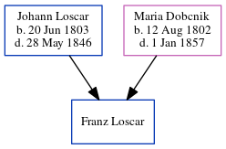

Franz Xavier Loscar
[ Home ] | [ Calendar ] | [ Surnames Index ] | [ Census Index ] | [ Family History ]The child of Johann Loscar and Maria Dobcnik, Franz Loscar was the three times great-uncle of Michele Copp (née Phillips).
Parents
- Johann was born on Jun 20, 1803
- Maria was born on Aug 12, 1802
Family Tree
Generated by ged2site. Last updated on Jun 6, 2024